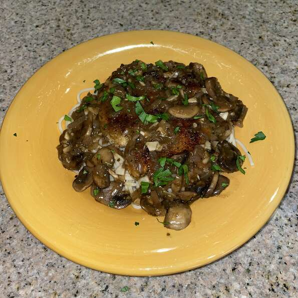

Chicken Marsala

Description
This juicy chicken marsala recipe will make your mouth water
A delicious, classic chicken dish -- lightly coated chicken breasts braised with Marsala wine and mushrooms. Easy and
ideal for both a quick weeknight entree AND serving to company.
Ingredients
- 1/4 cup all-purpose flour for coating
- 1/2 teaspoon salt
- 1/4 teaspoon ground black pepper
- 1/2 teaspoon dried oregano
- 4 half breast, bone and skin removed, skinless, boneless chicken breast halves- ponded 1/4 inch thick
- 4 tablespoons butter
- 4 tablespoons olive oil
- 1 cup sliced mushrroms
- 1/2 cup marsala wine
- 1/4 cup cooking sherry
Steps
- In a shallow dish or bowl, mix together the flour, salt, pepper and oregano. Coat chicken pieces in flour mixture.
- In a large skillet, melt butter in oil over medium heat. Place chicken in the pan, and lightly brown. Turn over chicken pieces, and add mushrooms. Pour in wine and sherry. Cover skillet; simmer chicken 10 minutes, turning once, until no longer pink and juices run clear.